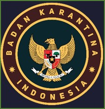
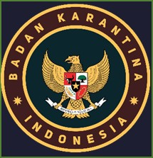

Sistem Informasi Elektronik Terpadu Aktual Mandiri
Sistem informasi ini dibangun untuk memudahkan pegawai Balai Besar Karantina Hewan, Ikan dan Tumbuhan Kalimantan Timur memperoleh Informasi.
Semoga Bermanfaat.
Sistem informasi ini dibangun untuk memudahkan pegawai Balai Besar Karantina Hewan, Ikan dan Tumbuhan Kalimantan Timur memperoleh Informasi.
Semoga Bermanfaat.
